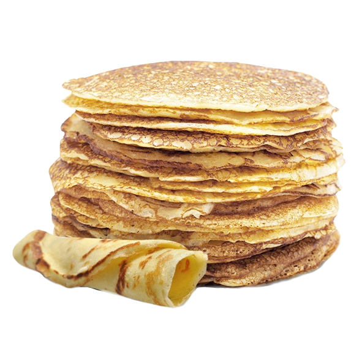

Alternatiefje
This is my personal take on banana bread, totally gluten and lactose free.
Ingredients
- 100 grams almond flour
- 100 grams buckwheat flour
- 100 grams raisins
- 60 grams walnuts in small pieces
- 4 grams ground cinnamon
- 2 grams salt
- 15 grams baking powder
- 2 bananas in small pieces
- 150 grams soy milk
- 150 grams dates deseeded
Directions
- Preheat your oven to 170 C° or 340 F° on hot air mode.
- Put the raisins in a small bowl, boil some water and pour that on the raisins. Let them rehydrate for a few minutes.
- In a large bowl mix the almond flour, rehydrated raisins, buckwheat flour, ground cinnamon, salt and baking powder.
- Blend the dates, eggs, soy milk and bananas until smooth.
- Combine the wet and dry ingredients together and put the mixture into a round cake tin of around 24cm (9½ inches) in diameter.
- Bake for 40 minutes in the middle of the oven.